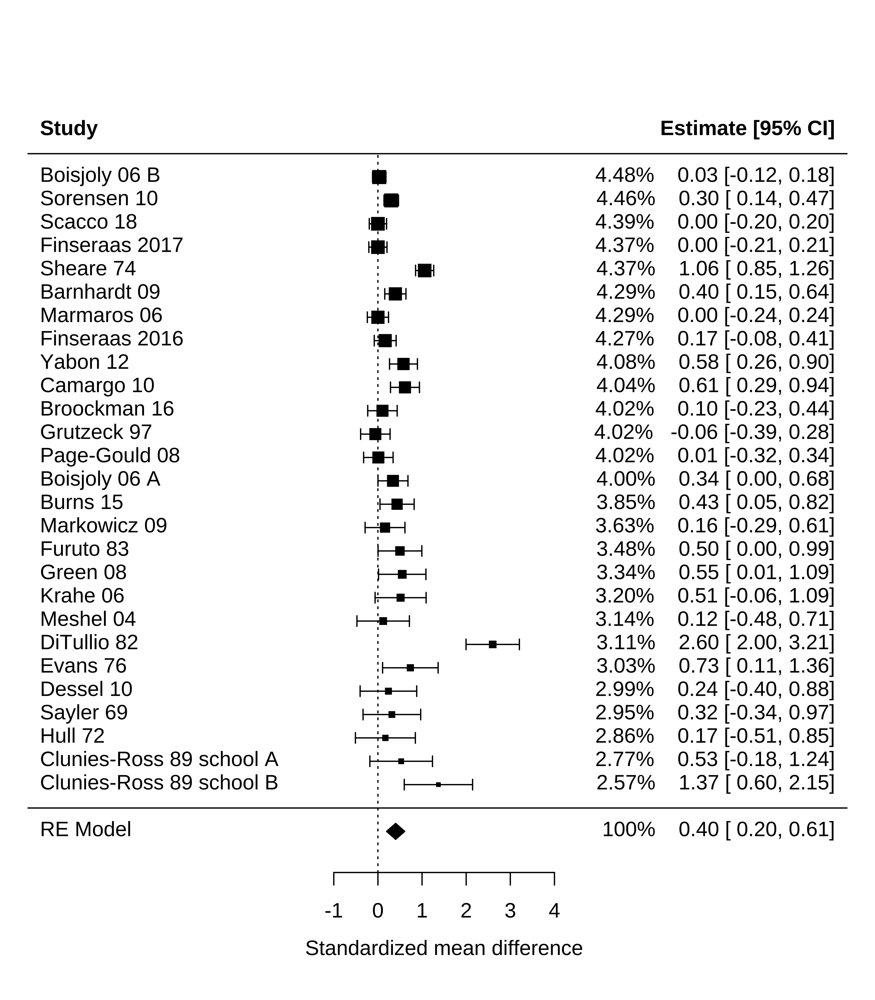
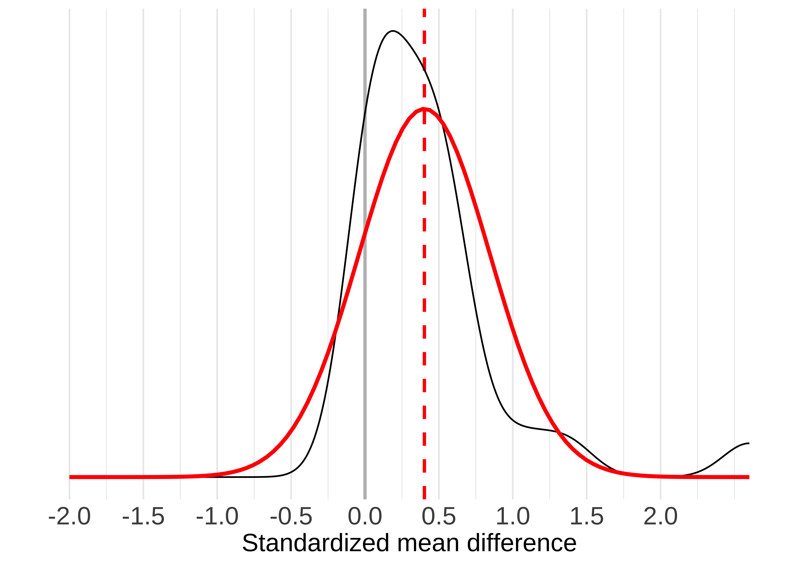
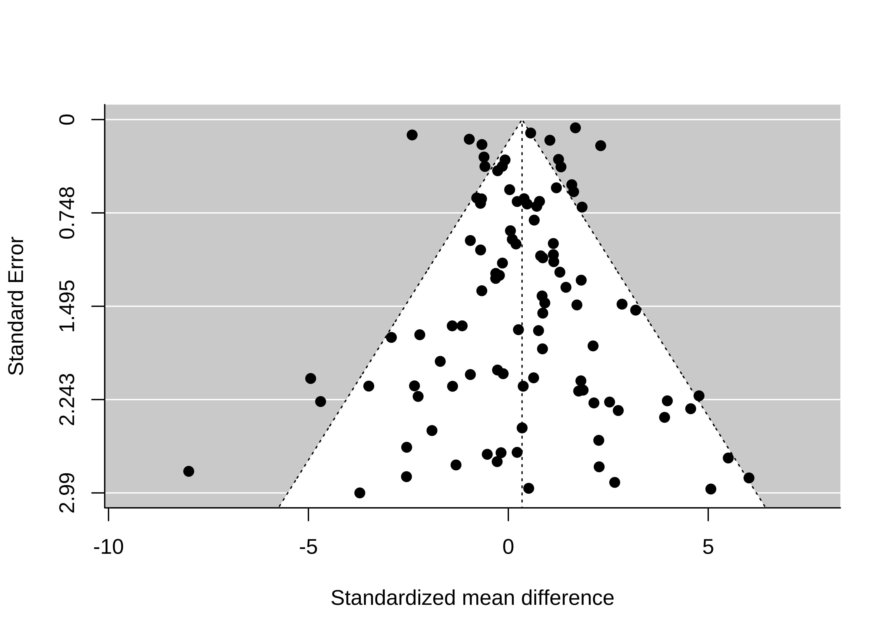

Throughout this book, we have focused on how to design individual experiments that maximize the precision of our effect size estimates and minimize their bias. But even when we do our best to get a precise, unbiased estimate in an individual experiment, we must also acknowledge that one study can never be definitive. For example, variability in participant demographics, stimuli, and experimental methods may limit the generalizability of our findings. Additionally, even well-powered individual studies have some amount of statistical error, limiting their precision.
For this reason, synthesizing evidence across studies is critical for developing a balanced and appropriately evolving view of the overall evidence on an effect of interest and for understanding sources of variation in the effect. Synthesizing evidence rigorously is not simply a matter of throwing a search term into Google Scholar, downloading articles that look topical or interesting, and qualitatively summarizing your impressions of those studies. While this ad hoc method can be an essential first step in performing a review of the literature (Grant and Booth 2009), it is not systematic, and it doesn’t provide any kind of quantitative summary of a particular effect. Further, it doesn’t tell you anything about potential biases in the literature – for example, a bias for the publication of positive effects.
To address these issues, a more systematic, quantitative review of the literature is often more informative. This chapter focuses on a specific type of quantitative review called meta-analysis. Meta-analysis is a method for combining effect sizes across different measurements. (If you need a refresher on effect size, see Chapter 5, where we introduce the concept).230 We’ll primarily be using Cohen’s \(d\), the standardized difference between means, which we introduced in Chapter 5. There are many more varieties of effect size available, but we focus here on \(d\) because it’s common and easy to reason about in the context of the statistical tools we introduced in the earlier sections of the book.
By combining information from multiple studies, meta-analysis often provides more precise estimates of an effect size than any single study. In addition, meta-analysis also allows the researcher to look at the extent to which an effect varies across studies. If an effect does vary across studies, meta-analysis also can be used to test whether certain study characteristics systematically produce different results (e.g., whether an effect is larger in certain populations).
Meta-analysis often teaches us something about a body of evidence that we do not intuitively grasp when we casually read through a bunch of articles. In this example, merely reading the individual studies might give the impression that social norm messages do not increase hotel towel re-use. But meta-analysis indicated that the average effect is beneficial, although there might be substantial variation in effect sizes across studies.231 Given the number of hotel bookings worldwide – 1.7 billion in the European Union alone in 2013 (Kotzeva, Brandmüller, and Önnerfors 2015) – the insight provided by the meta-analysis is not trivial!
As we explore the details of conducting a meta-analysis, we’ll turn to another example: a meta-analysis of studies investigating the “contact hypothesis” on intergroup relations.
According to the contact hypothesis, prejudice towards members of minority groups can be reduced through intergroup contact interventions, in which members of majority and minority groups work together to pursue a common goal (Allport 1954). To aggregate the evidence on the contact hypothesis, Paluck, Green, and Green (2019) meta-analyzed randomized studies that tested the effects of intergroup contact interventions on long-term prejudice-related outcomes.
Using a systematic literature search, they tried to identify all published papers that tested these effects and then extracted effect size estimates from each paper. Because not every paper reports standardized effect sizes – or even means and standard deviations for every group – this process can often involve scraping information from plots, tables, and statistical tests to try to reconstruct effect sizes.232 For example, if the outcome variable is continuous, we could estimate Cohen’s d (see Chapter 5) from group means and standard deviations reported in the paper, even without having access to raw data. This book will not cover the process of conducting a systematic literature search and extracting effect sizes, but these topics are critical to understand if you plan to conduct a meta-analysis or other evidence synthesis.
Following best practices for meta-analysis (where there are almost never privacy concerns to worry about), Paluck, Green, and Green (2019) shared their data openly. The first few lines are shown in Table 16.1. We’ll use these data as our running example throughout.
Table 16.1: First few lines of extracted effect sizes (d) and their variances (var_d) in the Paluck et al. meta-analysis.
| name_short | pub_date | target_spelled_out | n_total | d | var_d |
|---|---|---|---|---|---|
| Boisjoly 06 B | 2006 | race | 1243 | 0.030 | 0.006 |
| Sorensen 10 | 2010 | race | 597 | 0.302 | 0.007 |
| Scacco 18 | 2018 | religion | 474 | 0.000 | 0.010 |
| Finseraas 2017 | 2017 | foreigners | 577 | 0.000 | 0.011 |
| Sheare 74 | 1974 | disability | 400 | 1.059 | 0.011 |
| Barnhardt 09 | 2009 | religion | 312 | 0.395 | 0.015 |
As we’ve seen throughout this book, visualizing data before and after analysis helps benchmark and check our intuitions about the formal statistical results. In a meta-analysis, a common way to do so is the forest plot, which depicts individual studies’ estimates and confidence intervals.233 You can ignore for now the column of percentages and the final line, “RE Model”; we will return to these later. In the forest plot in Figure 16.1, the larger squares correspond to more precise studies; notice how much narrower their confidence intervals are than the confidence intervals of less precise studies.
Figure 16.1: Forest plot for Paluck et al. meta-analysis. Studies are ordered from smallest to largest standard error.
Many people’s first instinct to synthesize evidence is to count how many studies support versus did not support the hypothesis under investigation. This technique usually amounts to counting the number of studies with “significant” \(p\)-values, since – for better or for worse – “significance” is largely what drives the take-home conclusions researchers report (McShane and Gal 2017; N. Nelson, Rosenthal, and Rosnow 1986). In meta-analysis, we call this practice of counting the number of significant \(p\)-values vote-counting (Borenstein et al. 2021). For example, in the Paluck, Green, and Green (2019) meta-analysis, almost all studies had a positive effect size, but only 12 of 27 were significant. So, based on this vote-count, we would have the impression that most studies do not support the contact hypothesis.
Many qualitative literature reviews use this vote-counting approach, although often not explicitly. Despite its intuitive appeal, vote-counting can be very misleading because it characterizes evidence solely in terms of dichotomized \(p\)-values, while entirely ignoring effect sizes. In Chapter 3, we saw how fetishizing statistical significance can mislead us when we consider individual studies. These problems also apply when considering multiple studies.
For example, small studies may consistently produce non-significant effects due to their limited power. But when many such studies are combined in a meta-analysis, the meta-analysis may provide strong evidence of a positive average effect. Inversely, many studies might have statistically significant effects, but if their effect sizes are small, then a meta-analysis might indicate that the average effect size is too small to be practically meaningful. In these cases, vote-counting based on statistical significance can lead us badly astray (Borenstein et al. 2021). To avoid these pitfalls, meta-analysis combines the effect sizes estimates from each study (not just their \(p\)-values), weighting them in a principled way.
If vote-counting is a bad idea, how should we combine results across studies? Another intuitive approach might be to average effect sizes from each study. For example, in Paluck et al.’s meta-analysis, the mean of the studies’ effect size estimates is 0.44. This averaging approach is a step in the right direction, but it has an important limitation: averaging effect size estimates gives equal weight to each study. A small study (e.g., Clunies-Ross and O’meara 1989 with N=30) contributes as much to the mean effect size as a large study (e.g., Boisjoly et al. 2006 with N=1243). Larger studies provide more precise estimates of effect sizes than small studies, so weighting all studies equally is not ideal. Instead, larger studies should carry more weight in the analysis.
To address this issue, fixed-effects meta-analysis uses a weighted average approach. Larger, more precise studies are given more weight in the calculation of the overall effect size. Specifically, each study is weighted by the inverse of its variance (i.e., the inverse of its squared standard error). This makes sense because larger, more precise studies have smaller variances, and thus get more weight in the analysis.
In general terms, the fixed-effect pooled estimate is:
\[\widehat{\mu} = \frac{ \sum_{i=1}^k w_i \widehat{\theta}_i}{\sum_{i=1}^k w_i}\] where \(k\) is the number of studies, \(\widehat{\theta}_i\) is the point estimate of the \(i^{th}\) study, and \(w_i = 1/\widehat{\sigma}^2_i\) is study \(i\)’s weight in the analysis (i.e., the inverse of its variance).234 If you are curious, the standard error of the fixed-effect \(\widehat{\mu}\) is \(\frac{1}{\sum_{i=1}^k w_i}\). This standard error can be used to construct a confidence interval or \(p\)-value, as described in Chapter 6.
We can use the fixed-effects formula to estimate that the overall effect size in Paluck et al.’s meta-analysis studies is a standardized mean difference of \(\widehat{\mu}\) = 0.28; 95% confidence interval [0.23, 0.34]; \(p < .001\). Because Cohen’s \(d\) is our effect size index, this estimate means that intergroup contact decreased prejudice by 0.28 standard deviations.
One of the limitations of fixed-effect meta-analysis is that it assumes that the true effect size is, well, fixed! In other words, fixed-effect meta-analysis assumes that there is a single effect size that all studies are estimating. This is a stringent assumption. For example, imagine that intergroup contact decreases prejudice when the group succeeds at its goal, but increases prejudice when the group fails at its goal. If we meta-analyzed two studies, one in which intergroup contact substantially increased prejudice, and one in which intergroup contact substantially decreased prejudice, it might appear that the true effect of intergroup contact is close to zero, when in fact both of the meta-analyzed studies have large effects.
In Paluck et al.’s meta-analysis, studies differed in several ways that could lead to different true effects. For example, some studies recruited adult participants while others recruited children. If intergroup contact is more or less effective for adults versus children, then it is misleading to talk about a single (i.e., fixed) intergroup contact effect. Instead, we would say that the effects of intergroup contact vary across studies, an idea called heterogeneity.
Does the concept of heterogeneity remind you of anything from when we analyzed repeated-measures data in Chapter 7 on models? Yes! Recall that, with repeated-measures data, we had to deal with the possibility of heterogeneity across participants – and of the ways we did so was by introducing participant-level random intercepts to our regression model. It turns out that we can do a similar thing in meta-analysis, dealing with heterogeneity across studies.
While fixed-effect meta-analysis essentially assumes that all studies in the meta-analysis have the same population effect size, \(\mu\), random-effects meta-analysis instead postulates that studies’ population effects come from a normal distribution with mean \(\mu\) and standard deviation \(\tau\).235 Technically, other specifications of random-effects meta-analysis are possible. For example, robust variance estimation does not require making assumptions about the distribution of effects across studies (Hedges, Tipton, and Johnson 2010). These approaches also have other substantial advantages, like their ability to handle effects that are clustered [e.g., because some papers contribute multiple estimates; Hedges, Tipton, and Johnson (2010); Pustejovsky and Tipton (2021)] and their ability to provide better inference in meta-analyses with relatively few studies (Tipton 2015). For these reasons, the authors of this book prefer to use these robust methods by default when conducting meta-analyses. The larger the standard deviation, \(\tau\), the more heterogeneous the effects are across studies. A random-effects model then estimates both \(\mu\) and \(\tau\), for example by maximum likelihood (DerSimonian and Laird 1986; Brockwell and Gordon 2001).236 A confidence interval and \(p\)-value for the random-effects estimate \(\widehat{\mu}\) can be obtained using standard theory for maximum likelihood estimates with an additional adjustment that helps account for uncertainty in estimating \(\tau\) (Knapp and Hartung 2003).
Like fixed-effect meta-analysis, the random-effects estimate of \(\widehat{\mu}\) is still a weighted average of studies’ effect size estimates: \[\widehat{\mu} = \frac{ \sum_{i=1}^k w_i \widehat{\theta}_i}{\sum_{i=1}^k w_i}\]
However, in random-effects meta-analysis, the inverse-variance weights now incorporate heterogeneity: \(w_i = 1/\left(\widehat{\tau}^2 + \widehat{\sigma}^2_i \right)\). Where before we had one term in our weights, now we have two. That is because these weights represent the inverse of studies’ marginal variances, taking into account both statistical error due to their finite sample sizes (\(\widehat{\sigma}^2_i\)) and also genuine effect heterogeneity (\(\widehat{\tau}^2\)).237 The estimate of \(\widehat{\tau}^2\) is a bit more complicated, but is essentially a weighted average of studies’ residuals, \(\widehat{\theta_i} - \widehat{\mu}\), while subtracting away variation due to statistical error, \(\widehat{\sigma}^2_i\) (DerSimonian and Laird 1986; Brockwell and Gordon 2001).
Conducting a random-effects meta-analysis of Paluck et al.’s dataset yields \(\widehat{\mu}\) = 0.4; 95% confidence interval [0.2, 0.61]; \(p < .001\). That is, they estimated that, on average across studies, intergroup contact was associated with a decrease in prejudice of 0.4 standard deviations. This meta-analytic estimate is shown as the bottom line of Figure 16.1.
However, these effects appeared to differ across studies. Paluck et al. estimated that the standard deviation of effects across studies was \(\widehat{\tau}\) = 0.44 ; 95% confidence interval [0.25, 0.57]. This estimate indicates a substantial amount of heterogeneity! To conveniently visualize these results, we can plot the estimated density of the population effects, which is just a normal distribution with mean \(\widehat{\mu}\) and standard deviation \(\widehat{\tau}\) (Figure 16.2).
This meta-analysis highlights an important point:that the overall effect size estimate \(\widehat{\mu}\) represents only the mean population effect across studies. It tells us nothing about how much the effects vary across studies. Thus, we recommend always reporting the heterogeneity estimate \(\widehat{\tau}\), preferably along with other related metrics that help summarize the distribution of effect sizes across studies (Riley, Higgins, and Deeks 2011; Wang and Lee 2019; Mathur and VanderWeele 2019, 2020a). Reporting the heterogeneity helps readers know how consistent or inconsistent the effects are across studies, which may point to the need to investigate moderators of the effect (i.e., factors that are associated with larger or smaller effects, such as whether participants were adults or children).238 One common approach to investigating moderators in meta-analysis is meta-regression, in which moderators (e.g., type of intergroup contact) are included as covariates in a random-effects meta-analysis model (Thompson and Higgins 2002). As in standard regression, coefficients can then be estimated for each moderator, representing the mean difference in population effect between studies with versus without the moderator.
 Figure 16.2: Estimated distribution of population effects from random-effects meta-analysis of Paluck et. al’s dataset (heavy red curve) and estimated density of studies’ point estimates (thin black curve).
Meta-analysis is an invaluable tool for synthesizing evidence across studies. However, the accuracy of meta-analysis can be compromised by two categories of bias: within-study biases and across-study biases. Either type can lead to meta-analysis estimates that are too large, too small, or in the wrong direction. We will now discuss examples of each type of bias as well as ways to address these biases when conducting a meta-analysis. This includes mitigating the biases at the outset through sound meta-analysis design and also assessing the robustness of the ultimate conclusions to possible remaining bias.
Within-study biases – such as demand characteristics, confounds, and order effects – not only impact the validity of individual studies, but also any attempt to synthesize those studies. In other words: garbage in, garbage out. For example, Paluck, Green, and Green (2019) noted that early studies on intergroup contact almost exclusively used non-randomized designs. Imagine a hypothetical study where researchers studied a completely ineffective intergroup contact intervention, and non-randomly assigned low-prejudice people to the intergroup contact condition and high-prejudice people to the control condition. In a scenario like this, the researcher will, of course, find that the prejudice was lower in the intergroup contact condition. However, this is not a true effect of the contact intervention, but rather a spurious effect of non-random assignment (i.e., confounding). Now imagine meta-analyzing many studies with similarly poor designs. The meta-analyst would find impressive evidence of an intergroup contact effect, but this is simply driven by systematic non-random assignment.
To mitigate this problem, meta-analysts often exclude studies that may be affected by within-study bias. For example, Paluck, Green, and Green (2019) excluded non-randomized studies to minimize concerns about confounding. Preferably, inclusion and exclusion criteria for meta-analyses should be preregistered to ensure that these decisions are applied in a systematic and uniform way, rather than being applied after looking at the results.
Sometimes, though, certain sources of bias cannot be eliminated through exclusion criteria, for example because it is not possible or ethical to randomize the independent variable. After data have been collected, meta-analysts should also assess studies’ risks of bias qualitatively using established rating tools (Sterne et al. 2016). Doing so allows the meta-analyst to communicate how much within-study bias there may be.239 Paluck, Green, and Green (2019) did not use this tool, but they could have used it to communicate, for example, the extent to which participants might have differentially dropped out of the study. Meta-analysts can also conduct sensitivity analyses to assess how much results might be affected by different within-study biases or by excluding certain types of studies (Mathur and VanderWeele 2022). For example, if nonrandom assignment is a concern, a meta-analyst may run the analyses including only randomized studies, versus including all studies, in order to determine if including nonrandomized studies changes the meta-analysis results. These two options parallel our discussion of experimental preregistration in Chapter 11: To allay concerns about results-dependent meta-analysis, researchers can either pre-register their analyses ahead of time or else be transparent about their choices after the fact. Sensitivity analyses can allay concerns that a specific choice of exclusion criteria is critically related to the reported results.
Across-study biases occur if, for example, researchers selectively report certain types of findings or selectively publish certain types of findings (publication bias). Often, these across-study biases favor statistically significant positive results, which means the meta-analysis of the available results will be inflated. For example, if researchers publish only the studies that yield statistically significant positive results and hide the studies that don’t, statistically combining the published studies via meta-analysis will obviously lead to exaggerated effect size estimates.
Like within-study biases, meta-analysts often try to mitigate across-study biases by being careful about what studies make it into the meta-analysis. Meta-analysts don’t only want to capture high-profile, published studies on their effect of interest, but also studies published in low-profile journals and the so-called “gray literature” [i.e., unpublished dissertations and theses; Lefebvre et al. (2019)].240 Evidence is mixed regarding whether including gray literature actually reduces across-study biases in meta-analysis (Tsuji et al. 2020; Mathur and VanderWeele 2021), but it is still common practice to try to include this literature.
There are also statistical methods to help assess how robust the results may be to across-study biases. Among the most popular tools to assess and correct for publication bias is the funnel plot (Duval and Tweedie 2000; Egger et al. 1997). A funnel plot shows the relationship between studies’ effect estimates and their precision (usually their standard error). They are called “funnel plots” because if there is no publication bias, then as precision increases, the effects “funnel” towards the meta-analytic estimate. As the precision is smaller, they spread out more because of greater measurement error.
Here is an example of one type of funnel plot (Mathur and VanderWeele 2020b) for a simulated meta-analysis of 100 studies with no publication bias:
As implied by the “funnel” moniker, our plot looks a little like a funnel. Larger studies (those with smaller standard errors) cluster more closely around the mean of 0.34 than do smaller studies, but large and small studies alike have point estimates centered around the mean. That is, the funnel plot is symmetric.241 Classic funnel plots look more like Figure 16.4. Our version is different in a couple of ways. Most prominently, we don’t have the vertical axis reversed (which we think is confusing), and we don’t have the left boundary highlighted (because we think folks don’t typically select for negative studies).
 Figure 16.4: Classic funnel plot.
Not all funnel plots are symmetric! Figure ?? is what happens to our hypothetical meta-analysis if all studies with \(p<0.05\) and positive estimates are published, but only 10% of studies with \(p \ge 0.05\) or with negative estimates are published. The introduction of publication bias dramatically inflates the pooled estimate from 0.34 to 1.15. Also, there appears to be a correlation between studies’ estimates and their standard errors, such that smaller studies tend to have larger estimates than do larger studies. This correlation is often called funnel plot asymmetry because the funnel plot starts to look like a right triangle rather than a funnel. Funnel plot asymmetry can be a diagnostic for publication bias, though it isn’t always a perfect indicator, as we’ll see in the next subsection.
How do we identify and correct bias across studies? Given that some forms of publication bias induce a correlation between studies’ point estimates and their standard errors, several popular statistical methods, such as Trim-and-Fill (Duval and Tweedie 2000) and Egger’s regression (Egger et al. 1997) are designed to quantify funnel plot asymmetry.
However, it is important to note that funnel plot asymmetry does not always imply that there is publication bias, nor does publication bias always cause funnel plot asymmetry. Sometimes funnel plot asymmetry is driven by genuine differences in the effects being studied in small and large studies (Egger et al. 1997; Lau et al. 2006). For example, in a meta-analysis of intervention studies, if the most effective interventions are also the most expensive or difficult to implement, these highly effective interventions might be used primarily in the smallest studies (“small study effects”). Essentially, funnel plots and related methods are best suited to detecting publication bias in which (1) small studies with large positive point estimates are more likely to be published than small studies with small or negative point estimates; and (2) the largest studies are published regardless of the magnitude of their point estimates. That model of publication bias is sometimes what is happening, but not always!
A more flexible approach for detecting publication bias uses selection models. These models can detect other forms of publication bias that funnel plots may not detect, such as publication bias that favors significant results. We won’t cover these methods in detail here, but we think they are a better approach to the question, along with related sensitivity analyses.242 High-level overviews of selection models are given in McShane, Böckenholt, and Hansen (2016) and Maier, VanderWeele, and Mathur (in press). For more methodological detail, see Hedges (1984), Iyengar and Greenhouse (1988), and Vevea and Hedges (1995). For a tutorial on fitting and interpreting selection models, see Maier, VanderWeele, and Mathur (in press). For sensitivity analyses, see Mathur and VanderWeele (2020b).
You may also have heard of “\(p\)-methods” to detect across-study biases such as \(p\)-curve and \(p\)-uniform (Simonsohn, Nelson, and Simmons 2014; Van Assen, Aert, and Wicherts 2015). These methods essentially assess whether the significant \(p\)-values “bunch up” just under 0.05, which is taken to indicate publication bias. These methods are increasingly popular in psychology and have their merits. However, it is important to note that these methods are actually simplified versions of selection models (e.g., Hedges 1984) that work only under considerably more restrictive settings than do the original selection models [for example, when there is not heterogeneity across studies; McShane, Böckenholt, and Hansen (2016)]. For this reason, it is usually (although not always) better to use selection models in place of the more restrictive \(p\)-methods.
Paluck et al. used a regression-based approach to assess and correct for publication bias. This approach provided significant evidence of a relationship between the standard error and effect size (i.e., an asymmetric funnel plot). Again, this asymmetry could reflect publication bias or other sources of correlation between studies’ estimates and their standard errors. Paluck et al. also used this same regression-based approach to try to correct for potential publication bias. Results from this model indicated that the bias-corrected effect size estimate was close to zero. In other words, even though all studies estimated that intergroup contact decreased prejudice, it is possible that there are unpublished studies that did not find this (or found that intergroup contact increased prejudice).
Taken together, Paluck and colleagues’ use of meta-analysis provided several important insights that would have been easy to miss in a non-quantitative review. First, despite a preponderance of non-significant findings, intergroup contact interventions were estimated to decrease prejudice by on average 0.4 standard deviations. On the other hand, there was considerable heterogeneity in intergroup contact effects, suggesting that there are important moderators of the effectiveness of these interventions. And finally, publication bias was a substantial concern, suggesting the need for follow-up research that will be published regardless of the outcome.
Overall, meta-analysis is a key technique for aggregating evidence across studies. Meta-analysis allows researchers to move beyond the bias of naive techniques like vote counting and towards a more quantitative summary of an experimental effect. Unfortunately, a meta-analysis is only as good as the literature it’s based on, so the aspiring meta-analyst must be aware of both within- and between-study biases!